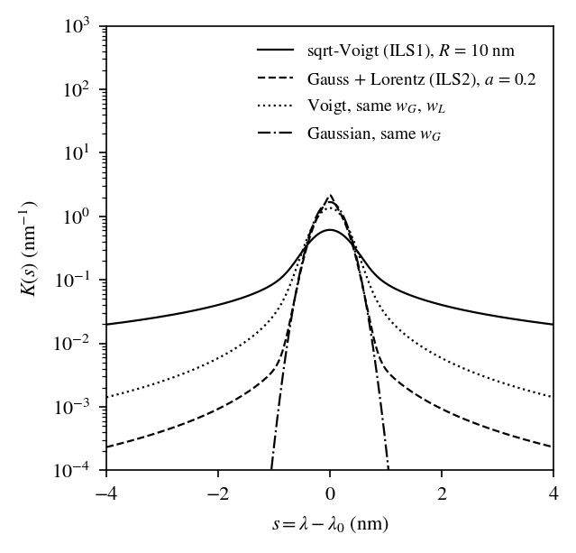
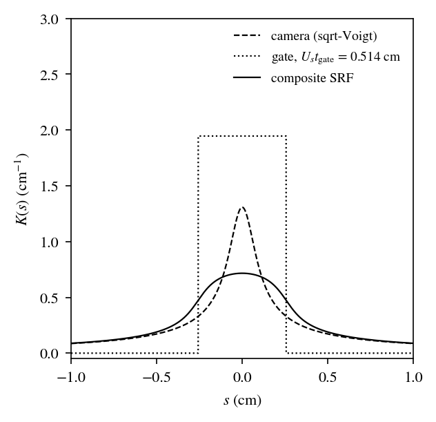

Instrument model: reproducing a shock-tube measurement
Source: src/radiation/instrument/ (instrumentFunctions/ and
shockTubeInstrument/), used by the shockTube1D transport mode
(src/radiation/transport/derived/shockTube1D/shockTube1D.C) and verified
by applications/test/radiationInstrument.
The transport modes of radiationFoam compute the radiance \(I(x,\lambda)\) that leaves the gas (Radiative transfer). A shock-tube spectrometer such as the NASA Electric Arc Shock Tube (EAST) does not record that quantity directly. It records it blurred in wavelength by the spectrometer, blurred along the tube by the optics, the camera and the motion of the shock during the exposure, and integrated over the wavelength windows of its figures. This page explains each of these steps, the way the code evaluates them, and the units of every number that is compared with EAST. The measurement model follows the definitions of Brandis and Cruden (2017), Sec. III.B, IV and Apps. C-D, and Cruden and Brandis (2020), App. A.
What the spectrometer sees
In EAST the shock travels down a tube of diameter \(D\) = 10.16 cm. An
imaging spectrometer looks across the tube, through its centreline, and
records the radiance along the line of sight on a two-dimensional detector:
one axis is the wavelength \(\lambda\), the other the position \(x\)
along the tube. shockTube1D computes the same line-of-sight radiance cell
by cell: each cell of the 1-D profile is a uniform slab of thickness
\(D\), and its radiance is \(I(x,\lambda)\) in
W m-2 sr-1 m-1 (see Radiative transfer).
Three things separate \(I(x,\lambda)\) from the recorded signal:
the instrument line shape (ILS): a monochromatic line is recorded with a finite width set by the slit, the grating and the detector;
the spatial resolution function (SRF): a point source along the tube is recorded with a finite extent set by the optics, the camera and the distance the shock moves while the camera gate is open;
the reduction that EAST applies to its data: band (window) integrals, the location of the shock front, the nonequilibrium metric and the spectra at chosen distances behind the front.
The first two are convolutions, the third is post-processing of the convolved field.
Convolution with a normalised kernel
Every instrument function is a normalised kernel \(K(s)\) of the offset \(s\) between the measured coordinate \(y\) and the source coordinate \(y'\) (\(y\) is either \(\lambda\) or \(x\)):
\(K(s)\) [1/length] is the signal recorded at \(y\) from a unit delta source at \(y'\), i.e. the way an ILS is measured with a calibration lamp line. Brandis and Cruden (2017, App. D) write the SRF as \(I_\mathrm{meas}(x) = \int \mathrm{SRF}(\delta x)\, I_\mathrm{true}(x + \delta x)\, \mathrm{d}\delta x\), i.e. \(K(s) = \mathrm{SRF}(-s)\); every EAST function is symmetric, so the two forms agree. The unit area means that a convolution moves energy between wavelengths (or positions) but does not create or destroy it.
The full measured field is the double convolution
The two kernels act on different axes, so they commute.
shockTubeInstrument::measure applies the ILS to the spectrum of every cell
first, then the SRF to the profile of every wavelength. Either kernel may be
absent, in which case it is the identity.
Each kernel class provides its cumulative distribution
its density \(K(s)\) (pdf), the half range \(R\) beyond which
\(K = 0\) (support) and a characteristic full width (width: a FWHM
or a base width). Analytic kernels give \(C(s)\) in closed form. The others
fill a piecewise-linear table of nodes \(t_k\) and densities \(p_k\);
between nodes \(C\) is then the exact integral of the linear density,
normalised so that \(C(t_\mathrm{last}) = 1\) (numerical normalisation, as the EAST ILS requires: Brandis and Cruden 2017, App. C).
Discrete convolution on the computational grid
The radiance is known at grid points \(y_0 < y_1 < \dots < y_{N-1}\)
(uniform in wavelength, possibly non-uniform in \(x\) for a DSMC mesh).
instrumentFunction::convolve treats each point as the owner of a bin:
so \(\Delta_i\) is the trapezoid weight of point \(i\). Source \(j\) carries the content \(c_j = \Delta_j f_j\), and the output is the bin average of the kernels placed on the sources:
Using the bin mass \(C(e_{i+1}-y_j) - C(e_i-y_j)\) instead of a sampled \(K(y_i - y_j)\) has three consequences:
a kernel narrower than the bins reduces to the identity (no aliasing of a narrow top hat or Gaussian);
a delta source on the grid returns the bin-averaged kernel exactly;
with
conserveAtEdges true(the default) the factor \(n_j\) gives back to the window the part of a kernel that falls outside it, so the trapezoid integral \(\sum_i \Delta_i g_i = \sum_j \Delta_j f_j\) holds to round-off for any grid and any kernel. WithconserveAtEdges false, \(n_j = 1\) and the content scattered beyond the window edges is lost, as on a detector of finite size.
The cost is \(O(NM)\) with \(M\) the number of points within the
kernel support. On a uniform grid (every spacing within \(10^{-10}\) of
the mean, relative) the interior weights depend on \(i - j\) only and are
computed once per call (\(2M+2\) evaluations of \(C\)). On any other
grid the \(NM\) weights and the \(n_j\) are computed once and stored with
the grid, and reused while the following calls pass the same grid (the spatial
convolution: one call per wavelength on the same cell centres); the result is
the same bit for bit (store capped at \(2^{25}\) weights). A kernel that
spans the window on a uniform grid (stencil \(2M+1 > N\), \(N \ge
4096\); the EAST line shape over the detector) makes the sum a linear
convolution of the amplitudes \(c_j/n_j\) with the interior weights
\(w(i-j)\): it is done by FFT (radix 2, length \(L \ge N + 2M\),
\(O(L \log L)\) instead of \(O(N^2)\)), \(n_j\) from prefix sums of the
same weights and the two half bins at the grid ends with their exact weights;
the result differs from the direct sum by round-off only (at most
\(5\times 10^{-14}\) relative on the 57-16 VUV spectrum; option
convolution).
Tip
Because the convolution conserves the integral, a band integral taken over a range much wider than the ILS is insensitive to the ILS. Peak spectral radiances and the peaks of the spatial profiles are not.
Instrument line shape (spectral kernels)
The available kernels are listed below; their dictionary keywords are in
Instrument classes. Widths are in metres unless lengthUnit
(m, cm, mm, um, nm) says otherwise.
Gaussian (gaussian), given its FWHM or its standard deviation:
cut at \(|s| = 10\sigma\) by default (cutoff, a truncated mass of
about \(1.5\times10^{-23}\)). It is also the EAST infrared camera
function of Brandis and Cruden (2017, App. D) with FWHM \(= 2 w_G\).
Voigt (voigt), from the FWHM \(f_G\) of its Gaussian part and
\(f_L\) of its Lorentzian part. With form exact (default) the
convolution \(G \otimes L\) is tabulated at start-up on uniform nodes of
spacing \(f_V/\mathrm{resolution}\) (default 100 nodes per
\(f_V\)), the Lorentzian averaged over a node cell and convolved with the
Gaussian cell masses (error \(O(h^2/\sigma^2)\)). With
form pseudoVoigt the kernel is the Thompson, Cox and Hastings (1987)
pseudo-Voigt with an analytic CDF:
The Lorentzian wings are cut at \(|s| = 100 f_V\) by default and the kernel renormalised there, with \(f_V\) the Olivero and Longbothum (1977) width
\(f_G = 0\) gives a Lorentzian, \(f_L = 0\) a Gaussian.
EAST line shapes (eastLineShape). Brandis and Cruden (2017,
Sec. IV.A and App. C) fit the measured EAST line shapes with two empirical
forms, parameterised by the Gaussian and Lorentzian half widths at half
maximum \(w_G\), \(w_L\) of their tables (published in nm: set
lengthUnit nm). With
the two forms are
ILS1 is used below 500 nm and for the camera part of the spatial function;
ILS2 for the longer-wavelength cameras. The square root of a Voigt decays as
\(1/|s|\), so its integral diverges: the normalisation needs a finite half
range \(R\) (cutoff, mandatory). Brandis and Cruden (2017, App. C)
write the normalisation integral to infinity, state that it “is not expressed
analytically, and must be done numerically” and give no range. The database
applies both forms over the detector (since 2026-11-17): the window is the
camera range (windowMargin 0), \(R\) is the width of the camera range,
so that the kernel of every source spans the detector, and every kernel is
normalised over it (conserveAtEdges). The long-range wings are produced
by the intensified CCD (Brandis et al. 2015, p. 213; “the profile of
radiation falling on the CCD coupled with the charge spread function of the
CCD”, Brandis and Cruden 2017, Sec. IV.A), which spreads only the light that
falls on it, and the functions are “normalized to conserve the area under the
curve” (ibid.): the integral of the measured spectrum over the camera range
equals that of the source spectrum. A band that extends beyond the camera
range is integrated over the overlap (the 170-180 nm window of a camera that
ends at 178 nm). In the EAST 57-16 VUV spectrum the floor between the N I
multiplets at 149.3 and 174.3 nm (159.5-164 nm) is 0.95 of EAST with this rule
and 0.14 with the former \(R\) = 10 nm (which cut it off at exactly 10 nm
from both multiplets); over ten Test 57 shots the floor follows the line
content of the camera (docs/reports/EAST_VUV_FLOOR_FIX_20261117.md; the
former range study docs/reports/EAST_ILS_CUTOFF_20261117.md). ILS2 is
truncated at \(R\) and renormalised with its analytic CDF.


Spectral kernels for the EAST UV/Vis camera half widths of shot 50-29
(\(w_G\) = 0.28 nm, \(w_L\) = 0.070 nm), all of unit area:
sqrt-Voigt ILS1 normalised on \(|s| \le 10\) nm, Gauss + Lorentz ILS2
(\(a\) = 0.2, illustrative), the Voigt and the Gaussian of the same
half widths. The ILS1 wings decay as \(1/|s|\), which is why its peak
depends on the cut-off. Analytical curves; script
_static/figures/theory/instrument_kernels.py.
Tabulated (tabulated): a two-column ASCII file of offset and recorded
response (any scale), e.g. a calibration-lamp line. The density is linear
between the file nodes and normalised to unit area over the file range, so
nothing is resampled. centre subtracts a given offset;
centreFirstMoment true puts the centroid at zero instead.
Top hat and trapezoid are mostly spatial kernels (next section), but any kernel can be used on either axis.
Spatial resolution and the camera gate smear
Brandis and Cruden (2017, App. D) write the EAST spatial resolution function as the convolution of three parts,
built in radiationFoam with a composite function whose sub-dictionaries
are the three parts:
\(f_\mathrm{opt}\), the optics: a triangle of base \(d_\mathrm{opt}\) (Eq. D1) or a trapezoid of bottom \(d_\mathrm{opt,2}\) and top \(d_\mathrm{opt,1}\) (Eq. D3), class
trapezoidof bottom width \(b\), top width \(t\) and height \(2/(b + t)\):\[K(s) = \frac{2}{b+t}\,\min\!\left[1,\; \max\!\left(0,\; \frac{b/2 - |s|}{(b - t)/2}\right)\right] ;\]\(f_\mathrm{cam}\), the camera: a sqrt-Voigt (
eastLineShape) or a Gaussian (infrared camera), with widths in cm;\(f_\mathrm{motion}\), the smear of the shock moving during the gate: a top hat of width
\[d_\mathrm{gate} = U_s\, t_\mathrm{gate}, \qquad K(s) = \frac{1}{d_\mathrm{gate}}\ \ \text{for}\ |s| < d_\mathrm{gate}/2 ,\]given either as
widthor asshockSpeed[m/s] andgateTime[s] (always SI; Eq. D2). For shot 50-29 the VUV camera smear is 0.514 cm and the UV/Vis smear 0.257 cm, far larger than the optics (0.041 cm). The top hat is centred: it assumes that \(x = 0\) is the shock position at mid-gate. Referred to the shock position at the gate opening, the smear is the same top hat shifted by \(d_\mathrm{gate}/2\).
The composite is built once at start-up on a uniform table: nodes
\(t_k = -R + k h\) with \(R\) the sum of the component supports and
\(h\) = (smallest component width)/resolution (default 200), capped at
maxNodes (default 400 001) nodes. The components are folded one by one,
with \(A\) the functions folded so far and \(B\) the next one. Both factors are cell-integrated, so top hats and kernels narrower than \(h\) are handled, and the error is \(O(h^2)\) of the smallest width.


Spatial resolution function of the EAST VUV camera of shot 50-29
(tutorials/EAST/east5029): camera sqrt-Voigt (\(w_G\) = 0.026 cm,
\(w_L\) = 0.063 cm, cut at 10 cm), gate top hat 0.514 cm, and their
composite with the 0.041 cm optics triangle (off the scale, peak
48.8 cm-1). The gate smear sets the width of the composite; the
camera sets its wings. Analytical curves; script
_static/figures/theory/instrument_kernels.py.
Spatial bins. A DSMC profile may have micrometre cells, far below the
EAST resolution (0.2-5 mm). With spatialBinWidth \(h_b\) the raw
radiance of the cells is first averaged over uniform bins
\([x_\mathrm{min} + i h_b,\ x_\mathrm{min} + (i+1) h_b)\), each cell
weighted by its width (midpoint to midpoint) and each bin placed at the
weighted mean \(x\) of its cells (empty bins are skipped). This bounds the
memory and the cost of the measurement and adds a top hat of width
\(h_b\) to the SRF.
Band (spectral-window) radiance
EAST reports most of its results as radiance integrated over a wavelength window \([\lambda_a, \lambda_b]\):
shockTubeInstrument::bandIntegral integrates the piecewise-linear
interpolant of the measured spectrum exactly: the band ends are clipped to the
grid, the interpolant is evaluated at the clipped ends and the trapezoid rule
is applied interval by interval. The bands of a camera are given in
bandUnit (nm by default; um and m are accepted). A band that
extends beyond the measured range is clipped with a warning.
Note
The raw band integrals of bands.csv (no instrument) use a different
rule: the sum of \(I_i\,\Delta\lambda\) over the grid points inside the
band, a point on a band edge counting as inside
(Post-processing). The two agree when the band is wide
compared with the grid spacing.
Shock alignment
The computed profile has its own coordinate \(x\); EAST plots its data
against the distance behind the shock front. Brandis and Cruden (2017) give no
absolute \(x = 0\), so both are aligned on the front. The front
\(x_0\) is found on the measured band profile of one band (shockFront
band, default the first band) by one of three criteria, or set directly by
shockFront position:
peakRadiance(default)The location of the maximum of the profile, refined by the vertex of the parabola through the three points around it. With \(k\) the index of the maximum, \(a = x_k - x_{k-1}\), \(b = x_k - x_{k+1}\), \(f_a = f_k - f_{k+1}\) and \(f_b = f_k - f_{k-1}\),
\[x_0 = x_k - \frac12\,\frac{a^2 f_a - b^2 f_b}{a f_a - b f_b} .\]This is the EAST definition: “the shock front is defined as the location of peak radiance” (Brandis and Cruden 2017, Sec. III.B).
maxGradientThe location of the steepest rise of the profile from the upstream side into the shocked gas: the slopes at the interval midpoints, signed so that a rise into the shocked gas is positive, then the parabola-refined maximum. A steeper decrease downstream (end of the test gas, an expansion, the domain end) is not taken. For shots without an overshoot EAST takes the inflection where the radiance reaches equilibrium; this criterion is the discrete counterpart.
riseFractionThe first \(x\), scanning from the upstream side, where the profile crosses \(f_\mathrm{pre} + \phi\,(f_\mathrm{post} - f_\mathrm{pre})\) (linear interpolation), with \(\phi\) =
fraction(0.5 by default: the 50 % rise). \(f_\mathrm{pre}\) and \(f_\mathrm{post}\) are the upstream and downstream end values unlesspreValue/postValueare given.
upstreamSide low (default) means that \(x\) increases from the free
stream into the shocked gas. The distance behind the shock is then
Nonequilibrium metric and measured spectra
The nonequilibrium metric of a band is the measured band radiance integrated over \(\pm h\) around the front and divided by the tube diameter (Brandis and Cruden 2017, Sec. III.B; Cruden and Brandis 2020, Eq. 1):
with \(h\) = metricHalfWidth (2 cm in EAST and by default) and
\(D\) the diameter of shockTube1DCoeffs. The interval is clipped
to the profile and the clipped range is reported. In optically thick ranges
EAST notes that the metric is not physically meaningful.
Measured spectra are extracted from the measured field in three ways:
at d: the spectrum at distance \(d\) behind the front, linearly interpolated in \(x\) between the two cells around \(x_0 + \sigma d\);at peaktakes the parabola-refined peak of the front band;average (d1 d2): the mean spectrum over the distance range, \(\frac{1}{x_b - x_a}\int_{x_a}^{x_b} I_\mathrm{meas}\,\mathrm{d}x\), exact for the piecewise-linear profile (EAST “equilibrium” spectra);metric h: the spectral nonequilibrium metric \(\frac1D \int_{x_0-h}^{x_0+h} I_\mathrm{meas}\,\mathrm{d}x\).
Units of the quantities compared with EAST
Everything inside the code is SI. EAST publishes spectral radiance in
W cm-2 sr-1 µm-1, band radiance and metrics in
W cm-2 sr-1, wavelengths in nm and distances in cm. The
conversions are static constants of shockTubeInstrument:
Quantity |
Written as |
Factor from SI |
Constant |
|---|---|---|---|
Spectral radiance |
W cm-2 sr-1 µm-1 |
\(10^{-10}\) |
|
Band radiance, metric |
W cm-2 sr-1 |
\(10^{-4}\) |
|
Wavelength |
nm |
\(10^{9}\) |
(none) |
Distance behind the front |
|
1, \(10^{2}\), \(10^{3}\) |
(none) |
(\(1\ \mathrm{m^{-2}} = 10^{-4}\ \mathrm{cm^{-2}}\) and
\(1\ \mathrm{m^{-1}} = 10^{-6}\ \mathrm{\mu m^{-1}}\), hence
\(10^{-10}\) for the spectral radiance.) The instrument_<camera>_*.csv
files are written in these units; the raw outputs and the binary measured
field stay SI (Post-processing).
EAST quotes a calibration uncertainty of about 30 % (Cruden and Brandis 2020), which is the scale of agreement to expect in an absolute comparison.
Code path
In shockTube1D (one sub-dictionary of instrument per camera):
at start-up each camera builds its
shockTubeInstrument(and the instrument functions, including the composite tables) and selects its window and, optionally, awavelengthRangeof it;in the cell loop the raw radiance of every cell on the camera range is copied (or accumulated into its spatial bin); the raw outputs are not changed;
after the loop the cells are sorted by \(x\) (two cells at the same \(x\) stop the run), and
shockTubeInstrument::measureapplies the ILS then the SRF;the band profiles, the front \(x_0\), the distances, the metrics and the requested spectra are computed and written (
instrument_<camera>_bands.csv,instrument_<camera>_spectra.csv, optionallyinstrument_<camera>_field.bin).
The same classes are driven without the solver by
Test-radiationInstrument (applications/test/radiationInstrument),
which the verification tutorial Instrument model verification uses to check
every kernel, the convolution, the band integral, the front criteria and the
complete measurement against analytical results.
References
Brandis, A. M. and Cruden, B. A., “Benchmark Shock Tube Experiments of Radiative Heating Relevant to Earth Re-entry,” 55th AIAA Aerospace Sciences Meeting, AIAA Paper 2017-1145, 2017. doi:10.2514/6.2017-1145
Cruden, B. A. and Brandis, A. M., “Measurement of Radiative Nonequilibrium for Air Shocks Between 7 and 9 km/s,” Journal of Thermophysics and Heat Transfer, 34 (1), 154-180, 2020. doi:10.2514/1.T5735
Olivero, J. J. and Longbothum, R. L., “Empirical fits to the Voigt line width: A brief review,” Journal of Quantitative Spectroscopy and Radiative Transfer, 17 (2), 233-236, 1977. doi:10.1016/0022-4073(77)90161-3
Thompson, P., Cox, D. E. and Hastings, J. B., Journal of Applied Crystallography, 20, 79, 1987 (pseudo-Voigt; reference as given in
instrumentVoigt.H).